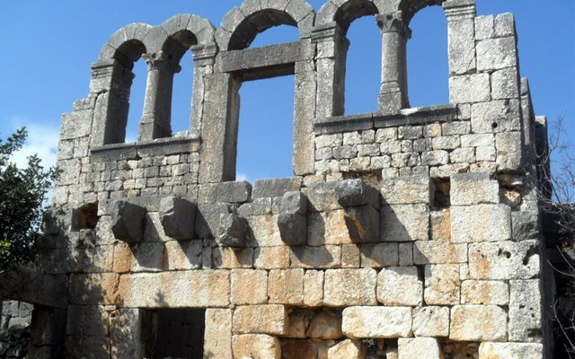
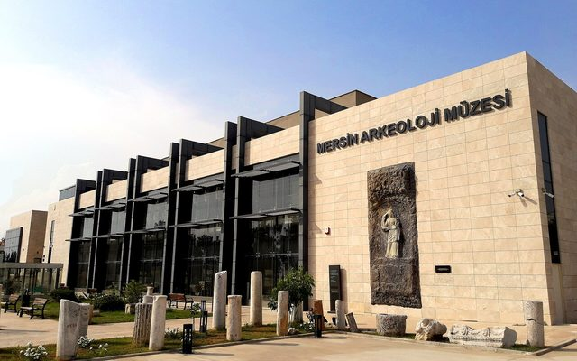

Kültür Varlıkları ガイドにはメルスィンの44か所が載っています：23 遺跡, 10 博物館, 7 城・歴史的建造物, 2 宗教建築, 2 自然景勝地。以下に注目スポット、地図、全リストを掲載しています。
⭐ 注目スポット

1 · メルスィン · 遺跡アダムカヤラル
アダムカヤラル（「人の岩」）は、スィリフケとエルデムリの間のシェイタン・デレスィ峡谷の切り立った崖に刻まれたローマ時代の人物レリーフ群です。戦士、家族、女性の姿を描いた壁龕は、葬送の記念碑として造られました。峡谷の縁を下る道は少し大変ですが、眺めと雰囲気はその価値があります。

2 · メルスィン · 遺跡アッカレ遺跡
アッカレは、エルデムリのクムクユの海岸にある、ローマ・初期ビザンツ時代の建物群の通称です。「白い城」を意味しますが、実際には2階建ての邸宅、浴場、貯水槽、倉庫からなる港の荘園施設です。海岸道路のすぐそばにあり、アーチのある構造物と海の眺めで、気軽に立ち寄れます。

3 · メルスィン · 遺跡アネムリウム遺跡
アナトリア最南端のアナムル岬にあるアネムリウムは、海と山の間に位置しています。最も印象的なのは、斜面に沿って何百もの墓の建物が並ぶ広大な墓地で、彩色された壁やモザイクの跡が残るものもあります。浴場、オデイオン、劇場、水道橋、教会の遺構が、ローマ時代と初期ビザンツ時代の活気ある暮らしを示しています。ウミガメが産卵する砂浜のそばにあり、夕方…
🗺 地図
📍 すべてのスポット (44)
遺跡 (23)
アダムカヤラル遺跡アッカレ遺跡遺跡アネムリウム遺跡遺跡 エライウッサ・セバステ古代都市遺跡
エライウッサ・セバステ古代都市遺跡 ギョクカレ遺跡遺跡
ギョクカレ遺跡遺跡 カンルディヴァーネ遺跡遺跡
カンルディヴァーネ遺跡遺跡 カンルディヴァーネ（カニュテリス）遺跡
カンルディヴァーネ（カニュテリス）遺跡
カラカバクル古代集落遺跡 ケレンデリス古代都市遺跡
ケレンデリス古代都市遺跡 メズギトカレ記念墓遺跡
メズギトカレ記念墓遺跡 オルバ古代都市遺跡
オルバ古代都市遺跡 スィリフケ・アヤテクラ遺跡遺跡
スィリフケ・アヤテクラ遺跡遺跡 ソリ・ポンペイオポリス古代都市遺跡
ソリ・ポンペイオポリス古代都市遺跡 タプレリ古代都市遺跡
タプレリ古代都市遺跡 タルスス古代ローマ街道遺跡
タルスス古代ローマ街道遺跡 タルスス・ギョズリュクレ遺跡
タルスス・ギョズリュクレ遺跡 タルスス・クレオパトラ門と古代の道遺跡
タルスス・クレオパトラ門と古代の道遺跡 ウズンジャブルチ遺跡遺跡
ウズンジャブルチ遺跡遺跡 ヤヌクハン遺跡遺跡
ヤヌクハン遺跡遺跡 ユムクテペ遺丘遺跡
ユムクテペ遺丘遺跡 チャトゥオレン古代集落遺跡
チャトゥオレン古代集落遺跡 オキュズリュ遺跡遺跡
オキュズリュ遺跡遺跡 ユチャヤクル・ヴィラ・ルスティカ遺跡
ユチャヤクル・ヴィラ・ルスティカ遺跡博物館 (10)
 メルスィン・アタテュルクの家博物館博物館
メルスィン・アタテュルクの家博物館博物館
メルスィン博物館博物館 スィリフケ・アタテュルクの家と民俗学博物館博物館
スィリフケ・アタテュルクの家と民俗学博物館博物館 スィリフケ博物館博物館
スィリフケ博物館博物館 スィリフケ・ナルルクユ・モザイク博物館博物館
スィリフケ・ナルルクユ・モザイク博物館博物館 タルスス・聖パウロ記念博物館博物館
タルスス・聖パウロ記念博物館博物館 タシュジュ・アルスラン・エイジェ・アンフォラ博物館博物館
タシュジュ・アルスラン・エイジェ・アンフォラ博物館博物館 タシュジュ・アタテュルクの家博物館アナムル博物館博物館メルスィン・タルスス博物館博物館
タシュジュ・アタテュルクの家博物館アナムル博物館博物館メルスィン・タルスス博物館博物館城・歴史的建造物 (7)
 ギョズネ城城・歴史的建造物
ギョズネ城城・歴史的建造物 コリュコスとクズカレスィ城・歴史的建造物
コリュコスとクズカレスィ城・歴史的建造物 マムレ城城・歴史的建造物
マムレ城城・歴史的建造物 メルスィン・クズ城城・歴史的建造物
メルスィン・クズ城城・歴史的建造物 ナムルン城城・歴史的建造物
ナムルン城城・歴史的建造物 スィリフケ城城・歴史的建造物
スィリフケ城城・歴史的建造物 ソフタ城城・歴史的建造物
ソフタ城城・歴史的建造物